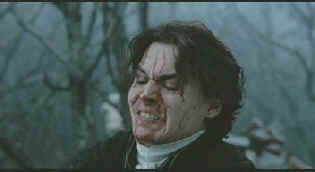

| Sleepy Hollow (SE)/B,A |
| Paramount/1999/105/ANA 1.85 |
One has come to expect a fresh, distinctive look and point of view from Tim Burton. His stylistic decisions might not be for everyone, but there is no denying that the camp, serio-comic treatment of Ed Wood in the director's film works with terrific finesse, and a film like Batman, with its dark underpinnings, is greatly enhanced by the Burton style. Then
there are the Mars Attacks moments that fail to find a true audience, catering far too much to the director's very personal taste, or even tastelessness, if you will. Sleep Hollow falls somewhere in between the best and worst of Burton. The storytelling is rather flat and uninspired. The look is distinctive, but the choices perhaps questionable. As an ode to the Hammer horror films of the fifties and sixties, Sleepy
Hollow works, but yet it fails to satisfy the appetite it coaxes from an audience. You'd think Washington Irving's Legend of Sleepy Hollow is a perfect Burton platform, but story slips through the cracks of the director's other interests.
 |
| Saturated blood in contrast to a pale palette. ©Paramount |
The mixed tone of Sleepy Hollow throws its audience into a quandary on how to view the film. Does the film want to be funny or scary? I guess it's nothing more than a slick comic book with a central character, Icabod Crane, who plays it ridiculous. The special effects are fill the screen with wonder and horror, and the score and photography are well produced.
Perhaps, the best way to view this film is through director Burton's eyes.
Sleepy Hollow is missing charm. There are elements that make you want more, more, but the plot is plodding and the characterizations simplistic. I love the cardinal in a cage toy and the box of gadgets carried by Icabod Crane are inventive.
Johnny Deep is such a bumbler as Icabod Crane, one wonders whether it's innocence or stupidity that defines this character. Wouldn't a truly sophisticated Icabod have been a wonderful character, dealing with the "country" bumpkins and the supernatural mystery with the panache of a Sherlock Holmes.
The players, including Depp, are all fine, under Burton's baton, but they can't escape the muddy tone. How over the top should the performers go? How serious can they look in some of the circumstances?
Burton chooses to drain his film of vibrant color, suggesting something between black and white and color. For an avowed aficionado of the Hammer horrors, I think he would have flooded his film with bright colors and strong contrast. The retelling of the Hessian reminded so much of Coppola's Dracula prelude. But, it was effective, if not original, and that's what is most important.
Tim Burton is enthusiastic on the audio commentary, but I must say I was disappointed. How many times can you use amazing as an adjective? Okay, Jeffrey Jones' wig was a fright, but it tickled Burton a lot more than it did me and I did not need it pointed at numerous times in the commentary. Burton is extremely generous in pointing out contributions to the film. clearly, this is a project the director
enjoyed immensely. It was like revisiting the movies of his childhood, conjuring images of all those Hammer horrors and adding a blood curdling cry or two of his own.
The transfer is a sterling example of DVD perfection. There is no hint of edge enhancement, yet the images are sharp throughout. The many fog scenes present potential pitfalls, but the transfer handles than effortlessly, making the fog a graceful video entity moving through Sleepy Hollow and its environs with grainless flow. Superbly recorded Dolby Digital 5:1 rounds out this excellent DVD package.
|
|

The Feature Archive has articles ranging from Akira Kurosawa to Blonde Bimbos and John Ford.
Fred Astaire and Cyd Charisse bring Silk Stockings to life, a remake of Ninotchka, one of many films successfully turned into musicals by the Hollywood dream factory. Read all about remakes into musicals by clicking on the divine dancers.
  Nicebid.com is a well organized auction site. Movie fans can browse through the movie section for posters and star photos. Nicebid.com is a well organized auction site. Movie fans can browse through the movie section for posters and star photos.
 DVD Gold DVD Gold
specializes in Region 2 films, and spins gold about the latest DVD releases in England and elsewhere. Check out the new site.
 DVD Informix is a British site providing a variety of DVD information, including lots of DVD software. Check it out from articles to links. DVD Informix is a British site providing a variety of DVD information, including lots of DVD software. Check it out from articles to links.
 Lovers of Hong Kong movies will relish MC4's site that includes reviews and other information about the Hong Kong movie scene. Lovers of Hong Kong movies will relish MC4's site that includes reviews and other information about the Hong Kong movie scene.
 The online site for Film Comment Magazine includes all the information you need to know about cinematic events sponsored by the Film Society of Lincoln Center. The online site for Film Comment Magazine includes all the information you need to know about cinematic events sponsored by the Film Society of Lincoln Center.

The Movie Poster Archive include extensive poster images from the films of stars like Susan Hayward, Kirk Douglas, Katharine Hepburn and many more. This month's featured star is Burt Lancaster. |